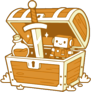
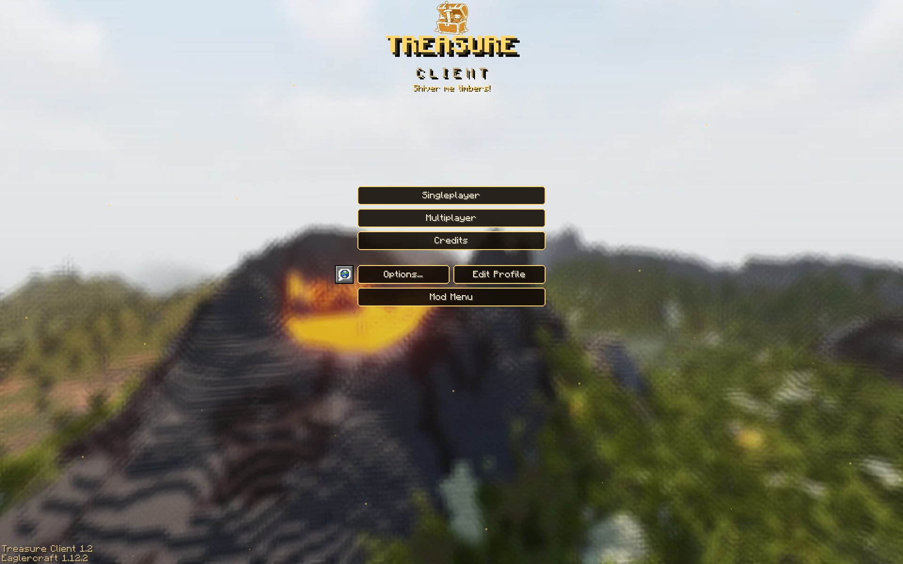

Mod Menu
Turn mods on and off and change their settings in game. Includes Zoom, Toggle Sprint, Toggle Sneak, No Hurt Cam, TNT Timer, Low Fire, Low Shield, Small Totem, Fullbright, Hitboxes, a custom crosshair and more.

Shiver me timbers!
A free Eaglercraft 1.12.2 client with a mod menu, themes, and modern items and blocks on newer servers.
Play in your browser
Download to play offline
Version 1.2 · Changelog · All releases · Source code
WASM is faster. Use JS if WASM doesn't load on your device.

Turn mods on and off and change their settings in game. Includes Zoom, Toggle Sprint, Toggle Sneak, No Hurt Cam, TNT Timer, Low Fire, Low Shield, Small Totem, Fullbright, Hitboxes, a custom crosshair and more.
Drag the FPS counter, CPS counter, ping display and other HUD mods wherever you want them on screen.
Five themes: Treasure, Frost, Tropical, Terracotta and Forest. Each one changes the menus and the background.
On newer servers, items like spears, maces and wind charges show up as the real thing instead of old stand-ins. Spears work, and modern blocks show up on servers that support them.
Blocks, items and potions use their current textures and colors from the newest Minecraft.
Play right here in the browser, or download a single .html file and open it anytime, even offline.
Use WASM. It runs a lot faster. The JS version is there for older browsers and devices where WASM doesn't load.
Download the WASM or JS file above and open it in your browser. You don't need an internet connection for singleplayer.
Any Eaglercraft 1.12 server. Modern items, blocks and spears show up on newer servers that support them.
Yes. No account or payment needed.
Yes. The full source is on GitHub: Treasure-Client-1.12-src. The WASM branch has the WASM version and the JS branch has the JS version.